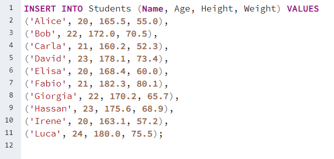
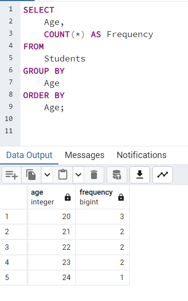
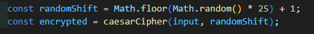
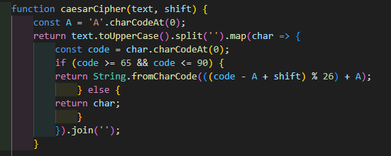

Homework 2
What is statistics, and why can it be useful for cybersecurity?
Explain the concept of dataset and distribution
- Dataset: A dataset is collection of data, usually organized in a structured way that is used for analysis, research, or training models.
Very often the way they are rappresented are Matrix of Unit x Variables.
- Rows represent individual observations or samples also called Unit
- Columns represent variables or features (e.g., age, height, income)
Person Age Height (cm) Weight (kg) A 25 170 68 B 30 180 75 C 22 165 60 - Distribution: A distribution describes how the values of a variable are spread out across the dataset.
It tells you which values are common and which are rare.
Common visualizations and summaries for distributions include:
- Histograms
- Boxplots
Example idea: If you examine the "Height" column for 1,000 people, you might find most heights fall between 165–175 cm and fewer exist below 160 cm or above 185 cm. That pattern is the height distribution — it often looks like a bell curve (the normal distribution).
- Dataset = raw material (all observations).
- Distribution = the shape or pattern of a variable across that dataset.
Relationship between Dataset and Distribution
The dataset is the raw collection of observations. A distribution is the summary or pattern you discover when you analyze one variable from that dataset. In short:
Create a dataset using a DBMS
For this homework I used PostgreSQL as DBMS. I created a database called Statisitcs and a table called Students with the following SQL commands:

Then i populated the table with an INSERT query:
Univariate distribution
To calcolate the univariate distribution i executed this script and calculate the distribution of the variable "Age":
Distribution of Letters
Insert a text to visualize the distributions of the letters:
To encrypt the text we use the CaesarCipher script implemented in this way:
 Encrypted text:
Below are the typical letter frequency distributions for English and Italian.
Data source: Wikipedia ("Letter frequency" article) and linguistics studies of letter usage in both languages.